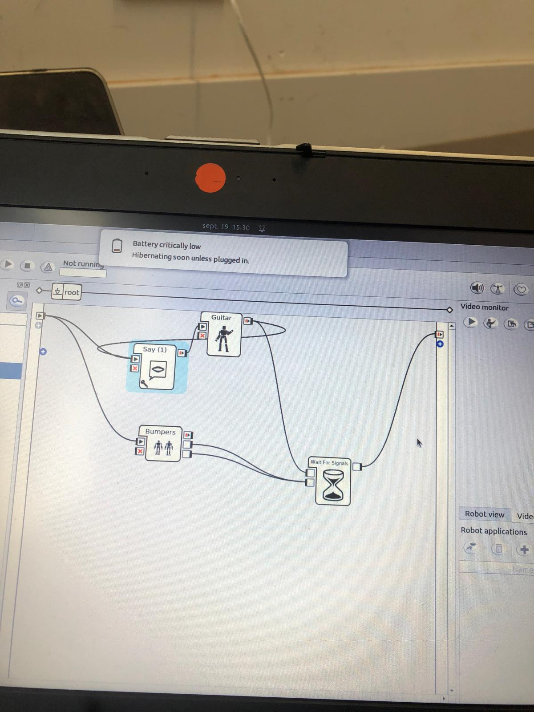

Voor deze project hebben we eerst een paar dingen gestest. Er waren 'build' in codes voor deze robot dus hieronder zie je een paar filmpjes van de robot:

Hier zie de basic code. Dit gedeelte was niet moeilijk.
We waren gewoon aan het uittesten wat de robot allemaal kon doen.
Hieronder zie een filmpje van de code:
Daarna zijn we begonnen met het maken van de echt code.
En daarvoor hadden we een oude versie van python gebruikt.
Er is geen foto van de code momenteel,
maar er is een filmpje van de robot die de code uitvoerd die zie je hieronder:
Je ziet hier dat de robot om de bal heen draait en als hij de blauwe rondje op de muur ziet dat hij dan stopt en naar voren begint te bewegegn, Waardoor bij dus 'scoort'